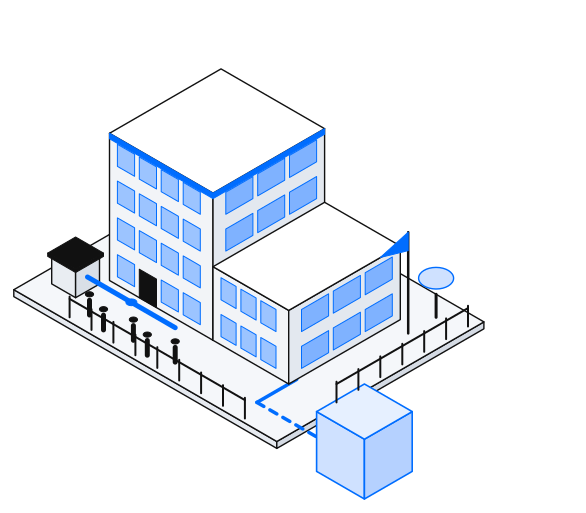

K-TEST
La PAA, como el día del examen, desde donde estén
Simulacros completos
Sprints de 15 minutos por tema
Material de estudio

Práctica real, a su ritmo y sin costo
Conocen la prueba
Formato y ejercicios de Lectura, Redacción y Matemáticas
A su ritmo
Cuando quieran y desde donde estén
Sin costo
Simulacros, sprints y material
Desde abril cambiamos el rumbo del curso
Metodología enfocada en el examen
Técnicas para manejar la ansiedad
Soham Villacorta e Iván Figueroa, Curso de Preparación para la PAA
Temporada alta: mayo a julio
184
jóvenes vinieron desde abril
409
asistencias en total
58 %
en mayo, junio y julio
32
93
78
66
50
25
38
27
Abr
May
Jun
Jul
Ago
Sep
Oct
Nov
Fuente: listas de asistencia, abril a noviembre de 2026
Más de un tercio vino un solo sábado
38%
69 de los 184 jóvenes
1
69
2
41
3
42
4 o más
32
Fuente: listas de asistencia, abril a noviembre de 2026
Desde agosto, el curso mejoró
Agosto
Noviembre
Cumplió expectativas
3.87 → 4.62
Motivación
3.83 → 4.43
Me preparó para la PAA
4.04 → 4.52
Retroalimentación
4.13 → 4.57
Por mejorar
Manejo de la ansiedad
3.11 → 3.57
Capaz de aplicarlo
3.43 → 3.95
3.0
3.5
4.0
4.5
5.0
Fuente: encuesta de cada jornada, escala de 1 a 5
Piden practicar más
62
comentarios piden más ejercicios
Tomar más en cuenta explicar los temas complicados y darle énfasis a los ejercicios de…
Intentar enseñar los ejercicios en una manera de resolver más sencilla y no tan compleja
Aplicaciones de ejercicios y como tener razonamiento matemático
Más ejercicios de otros temas que pueden salir.
Más ejercicios de práctica con los asesores, que ellos nos acompañen en algunos ejercicios
Hacer más ejercicios luego de las explicaciones.
Apoyo en mejor explicacion de los ejercicios, temas y lectura matemática para entender…
Hacer más ejercicios
Más resolución de ejercicios
Ejercicios de lógica y gráficas y líneas
Seguir con los temas y darnos a comprender los ejercicios de la PAA como lo han hecho…
Resolver mas ejercicio
La explicacion rapida y solo hacer un ejercicio
Más ejercicios.
Teniendo mas ejercicios de práctica que hagamos todos o en grupos
Designando ejercicios a resolver
Más resolución de ejercicios.
Poniendo más ejercicios de práctica
Que no se profundizase tanto en cada ejercicio
Que no había muchos ejercicios de practica
Mas teoria o aplicar mas ejercicios faciles y después hacer los examenes
Tomar más en cuenta explicar los temas complicados y darle énfasis a los ejercicios de…
Intentar enseñar los ejercicios en una manera de resolver más sencilla y no tan compleja
Aplicaciones de ejercicios y como tener razonamiento matemático
Más ejercicios de otros temas que pueden salir.
Más ejercicios de práctica con los asesores, que ellos nos acompañen en algunos ejercicios
Hacer más ejercicios luego de las explicaciones.
Apoyo en mejor explicacion de los ejercicios, temas y lectura matemática para entender…
Hacer más ejercicios
Más resolución de ejercicios
Ejercicios de lógica y gráficas y líneas
Seguir con los temas y darnos a comprender los ejercicios de la PAA como lo han hecho…
Resolver mas ejercicio
La explicacion rapida y solo hacer un ejercicio
Más ejercicios.
Teniendo mas ejercicios de práctica que hagamos todos o en grupos
Designando ejercicios a resolver
Más resolución de ejercicios.
Poniendo más ejercicios de práctica
Que no se profundizase tanto en cada ejercicio
Que no había muchos ejercicios de practica
Mas teoria o aplicar mas ejercicios faciles y después hacer los examenes
Fuente: comentarios de las encuestas, abril a noviembre de 2026
Llegan a la PAA sin conocer la prueba
Viven lejos o no pueden venir los 4 sábados.
Lun
K-Test
Mar
K-Test
Mié
K-Test
Jue
K-Test
Vie
K-Test
Sáb
Curso
Dom
K-Test
Con K-Test siguen practicando entre semana, desde su casa.
Lo que vieron es un prototipo
Prototipo
En línea, solo para el equipo
Datos de prueba
Estructura
Servidor de producción
Capacidad para todos los admitidos
Monitoreo y alertas
Instalaciones
Base de datos de producción
Respaldos automáticos
Integración con admisiones
Seguridad y recepción
Inicio con la cuenta de Key
Roles y permisos
Datos de menores protegidos
Aviso de privacidad
Acabados
Banco de preguntas propio
Más simulacros y sprints
Material de estudio
Identidad Key
Inauguración
Piloto con admitidos
Dominio de Key
Abierto a todos
Sigamos construyendo.

Para los que imaginan, y hacen.